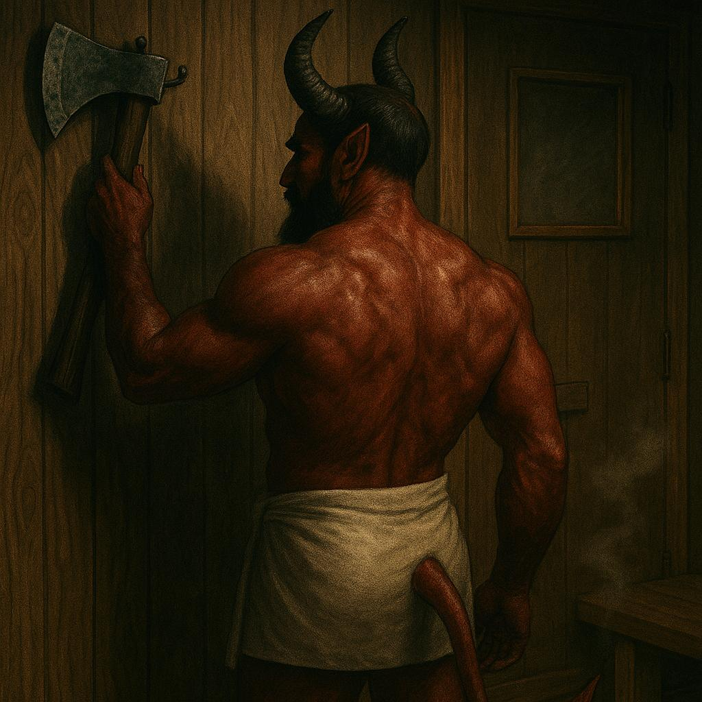

Seitan Meni Saunaan EP
Release date: June 6th, 2006
- 1. Nimm Es Nicht Ernst 02:37
- 2. Hitlers Höst 01:09
- 3. Rare Øyenbrynene 01:33
- 4. Seitan Meni Saunaan 00:57
- 5. Il Tamburo Del Capitano 01:56
- 6. Locos Del Pueblo 04:03
Total length: 12:15
All songs written and lyrics by Bankrupt Frostbite, except track 2 by this other dude.
Drinking glasses on track 6 by Kitarapoika.
Hitlers Höst CDS
Release date: April 30th, 2006.
- 1. Hitlers Höst 01:09
- 2. Hitlers Höst (Radio Edit) 00:51
Total length: 02:00
All songs written by this other dude.